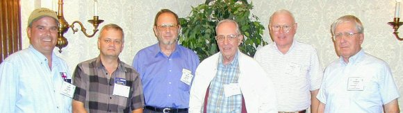
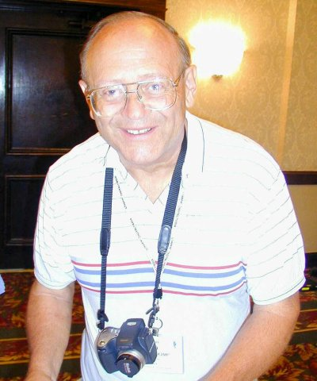

The James Millen Society
| AWA
2004 Conference - August 18-21 |
| JMS Attendance and Activities 
 Frank White, W0BE, supplied a short video of JMS member Gary Carter, WA4IAM, operating the vintage W1HRX Millen Station. During the conference Museum and Annex tour visitors are able to operate this station. Note: The video file is quite large - view only if you have a broadband connection! |